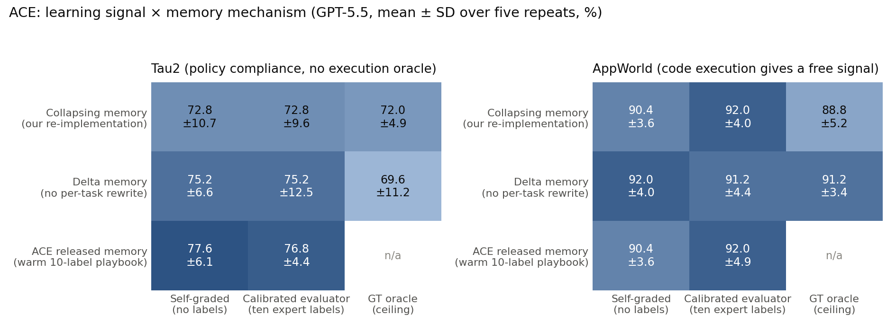

Letting agents design their own judges: lessons from 15,000 agent runs
Most published results on self-improving agents rely on the benchmark to say whether the agent succeeded. The agent tries a task, a hidden test says pass or fail, the agent writes a lesson into its playbook, and the curve goes up.
A deployed agent usually has no hidden test. A customer-service agent that just processed a refund does not get a reward. A coding agent that edited three files does not know whether the change was right. Without that signal the agent cannot safely retry, and it cannot tell a useful lesson from a misleading one. In our experience, verification rather than generation is the main obstacle to learning at deployment time.
My team studied one question: how much of the self-improvement story survives when the agent has to judge its own work, and how much does a small amount of expert feedback add? The campaigns reported here ran about fifteen thousand agent task runs across tau2-bench (airline, retail and telecom customer-service worlds) and AppWorld (a code-execution world with apps and application programming interfaces, APIs), with five independent repeats per method and a strict rule that benchmark labels are read only for scoring, after the agent has acted and learned. This post is the short version; the paper is linked at the end.
Three ideas
1. Let the agent’s own model design the judge, then freeze it. The usual way to get a deployment signal is for an engineer to hand-write checks: success rubrics, policy assertions, queries that read back the world state. That has to be redone for every new world. Our method, SelfSuite, gives the base model the same public materials an engineer would read (the world summary, the policy, the tool signatures) and asks it to write a small evaluation suite: a few weighted judges, each one criterion with a veto or soft rule, a per-task “TaskBrief” that turns the instruction into grounded success criteria, an aggregation rule, and a retry policy. The suite is frozen and used unchanged for every task in that world. The judges never see benchmark reward; they do see a read-back of the resulting world state (the records the agent touched), so the question becomes “did the world end up right” rather than only “does the transcript look right”.
The diagram below walks through the loop. It plays on its own; you can also step through it or click any box.
2. Track whether each lesson helped. Playbook-style memory (the Agentic Context Engineering, ACE, family of methods) grows one text playbook from reflection and injects it into the prompt. Ours stores typed lessons (positive and negative, routed by task family), retrieves only the five most relevant per task, and keeps a profit-and-loss ledger per lesson: a lesson retrieved before a success is credited and before a failure debited, so lessons that keep preceding failures are evicted. The store is capped at 200 entries.
3. Then ask what a subject-matter expert adds. SelfSuite needs no labels, but a real deployment usually has one human signal: a forward-deployed engineer (FDE) or subject-matter expert (SME) who onboards the agent and can grade roughly ten tasks per world. We simulate that expert with ten labelled onboarding tasks. A deterministic calibration uses six of those labels to propose a different folding, aggregation and threshold for the judges the model already wrote, and the other four as a strict acceptance gate: the proposal is adopted only if agreement improves and neither false passes nor false fails increase. Everything else (the agent, the retry policy, the memory) is held fixed. The same ten labels can instead warm up an ACE playbook, which lets us compare two ways of spending the same small budget.
How we measured
Single runs are noisy: across five independent repeats of the same 50-task cell, the run-to-run standard deviation was 2 to 7 percentage points (pp), and up to 12 pp on 25-task slices of tau2. Every comparison here therefore uses a matched protocol: identical task identifiers for every method, disjoint across repeats, fresh memory at the start of each repeat, mean and sample standard deviation over five repeats, and paired differences per repeat. All methods ran on GPT-5.5 at low reasoning effort: a plain ReAct agent, ACE (driven by the memory code its authors released) with and without a ten-label warm playbook, and SelfSuite with and without the expert calibration.
Five findings
SelfSuite improves on the plain agent without labels, and with ten labels it ties the strongest baseline. The plain agent scores 76.4 ± 6.2 % overall. SelfSuite with a freshly designed suite and no labels scores 82.4 ± 3.9 %, +6.0 pp paired over the agent (95 % confidence interval [−0.3, +12.3], so not significant on its own), and within noise of every learning method on both benchmarks. With the ten expert labels used to calibrate its evaluator it reaches 84.4 ± 4.6 %, +8.0 pp over the agent ([+2.2, +13.8]) and +2.0 pp over its uncalibrated version ([+0.2, +3.8]). ACE seeded with the same ten labels as a warm playbook reaches 84.0 ± 3.2 %; the two are tied.
In a separate ablation campaign, SelfSuite beat both label-free baselines, and the retry was the component that mattered. This campaign used the same SelfSuite settings and ran the plain agent and ACE without labels on the same tasks (five repeats of 43 or 44 tasks). SelfSuite scored 89.5 ± 5.4 % against 85.0 ± 4.1 % for ACE and 81.7 ± 4.6 % for the plain agent: +4.6 pp over ACE (above it in all five repeats, p = 0.011) and +7.8 pp over the agent (p = 0.040), with the margin coming from tau2. Removing the second attempt cost 7.8 ± 3.5 pp overall and 14.9 ± 5.7 pp on tau2, negative in all five repeats. Swapping balanced memory for the default memory setting cost a small but consistent 2.7 pp. Removing memory cost 6.4 pp on average, but with a standard deviation of 9.2. Removing the TaskBrief, replacing the judge panel with one critic, or changing memory polarity stayed within one standard deviation of zero overall. With five repeats, smaller effects may exist that this design cannot resolve.
Looking at every attempt, rather than every task, suggests why the retry does not hurt. Freshly designed suites were conservative: on single GPT-5.5 runs they passed only 6 to 64 % of tasks while true success was 66 to 90 %, with few false passes. Because keep-best lets a second attempt replace the first only when the suite scores it higher by a margin, retries mostly added tasks: first-attempt success rose from 62 to 66 % on airline, 82 to 83 % on retail and 70 to 76 % on telecom, gaining 3 to 9 tasks per world and losing 1 to 3.
Giving ACE the true label did not help, because its memory was discarding lessons. We gave ACE the true label on every task, a ceiling no deployed system would have, and it scored 80.4 % on both memory variants, below the label-free rows. The cause was what the ACE authors call context collapse: our first ACE re-implementation rewrote the whole playbook after every task, learned about 14 entries per cell and kept about 5. Disabling the rewrite (delta memory) recovered 2.4 pp on tau2 with no change in signal, and ACE’s released memory code with a warm ten-label playbook reached 77.6 % on tau2.

For ACE, ten labels helped most as a warm playbook. On the policy-heavy tau2 worlds, a warm ten-label playbook added about 6 pp over cold, self-graded ACE (77.6 vs 71.2 %; not significant with five repeats). Giving ACE the calibrated evaluator instead of its own self-grading added nothing measurable on top of that. On our context-collapsing re-implementation of ACE, the evaluator’s effect was to stop drift: a warm playbook that kept adapting without labels lost 3 pp on tau2, while the same playbook adapting under the calibrated evaluator held its warm-up score.
Where the world already gives a signal, the methods tie. On AppWorld, running the code tells every learner whether it worked, and the four learning methods land between 86 and 92 %, with standard deviations of 2 to 4 pp. On tau2, following the policy leaves no execution trace, and that is where the methods separate. Switch the results chart above between Tau2 and AppWorld to see this. Claims about learning without labels are most informative on worlds like tau2.
Remaining headroom in selection
The agent often produces a correct attempt that its own judges do not pick. When SelfSuite makes two attempts, we can check offline whether either one was correct. That best-attempt oracle exceeds the deployed score by 7.4 pp on average across models and worlds, and by 18.4 pp in one cell (Opus-4.8 telecom). Better selection would convert directly into task success, so the judge is where we would look next. Because the judge is the agent’s own model, it shares the agent’s blind spots; decomposition, grounding and state read-back reduce this but do not remove it.
What did not work
- Co-evolving the rubric with the playbook. A variant mined disagreements without labels (a passing aggregate with a failed state-conditioned judge; a state read-back inconsistent with the claimed outcome; near-identical trajectories with opposite verdicts), adjudicated two per window of twenty tasks, and published a revised rubric only if a replay on recorded trajectories lost no anchors. In the matched campaign it did not beat the frozen calibrated suite (81.2 ± 3.0 vs 84.4 ± 4.6 %).
- Airline. No learning method beat the plain agent on tau2 airline, on either model. The policy is dense, and a slightly wrong lesson or judge seems to cost more than it saves there.
If you are deploying an agent that should learn
- Consider giving it a way to retry. In our runs, a frozen, decomposed judge that reads the world state, plus one retry with a keep-best rule, was the component with the most consistent effect.
- Check memory retention before investing in a better signal. If the playbook rewrite discards most of what it learns, a better label will not help much.
- If you have ten expert labels, a warm playbook and an evaluator calibration are both reasonable uses; in our study they ended up at the same score.
- Report the run-to-run standard deviation. On our 50-task cells it was 2 to 7 pp, and differences inside that band should be treated as ties.
- Measure the best-attempt gap. If the agent produces correct attempts it does not select, the selector is the place to improve.
The paper (method, the label boundary, the matched five-repeat results, ablations, attempt-level diagnostics, the two-model study and limitations) is here: Self-Designed Evaluators and Warm Memory for Long-Horizon Agents (PDF).
Benchmarks: tau2-bench (Sierra Research) and AppWorld (Stony Brook NLP). ACE refers to Agentic Context Engineering (Zhang et al., 2025); the main comparisons use the memory code released by its authors.